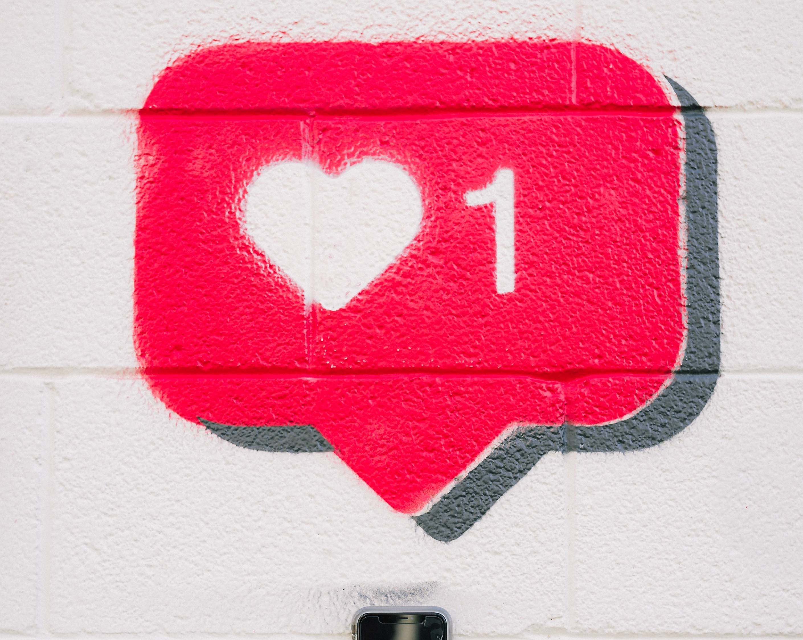

Why I Felt Safer in Lockdown Than at College
In my very first blog post., I share the challenges of having had to begin my freshman year of college during the COVID-19 pandemic, which deeply impacted my sociability.

Tips and Experiences on Overcoming Body Image Struggles on Social Media
In this group podcast.,

embracing my heritage through crunchwraps
An appealing description of your video. Create that "itch" to click we talked about!

Ukrainian Hokies reflect on ongoing invasion
I'm also a news writer for the Collegiate Times. I consider this article. as one of my most significant ones as it reveals how Ukrainian students and faculty were coping with Russia's invasion of their home as well and how Virginia Tech could support them.